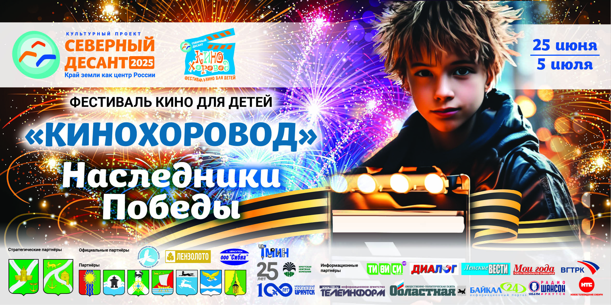
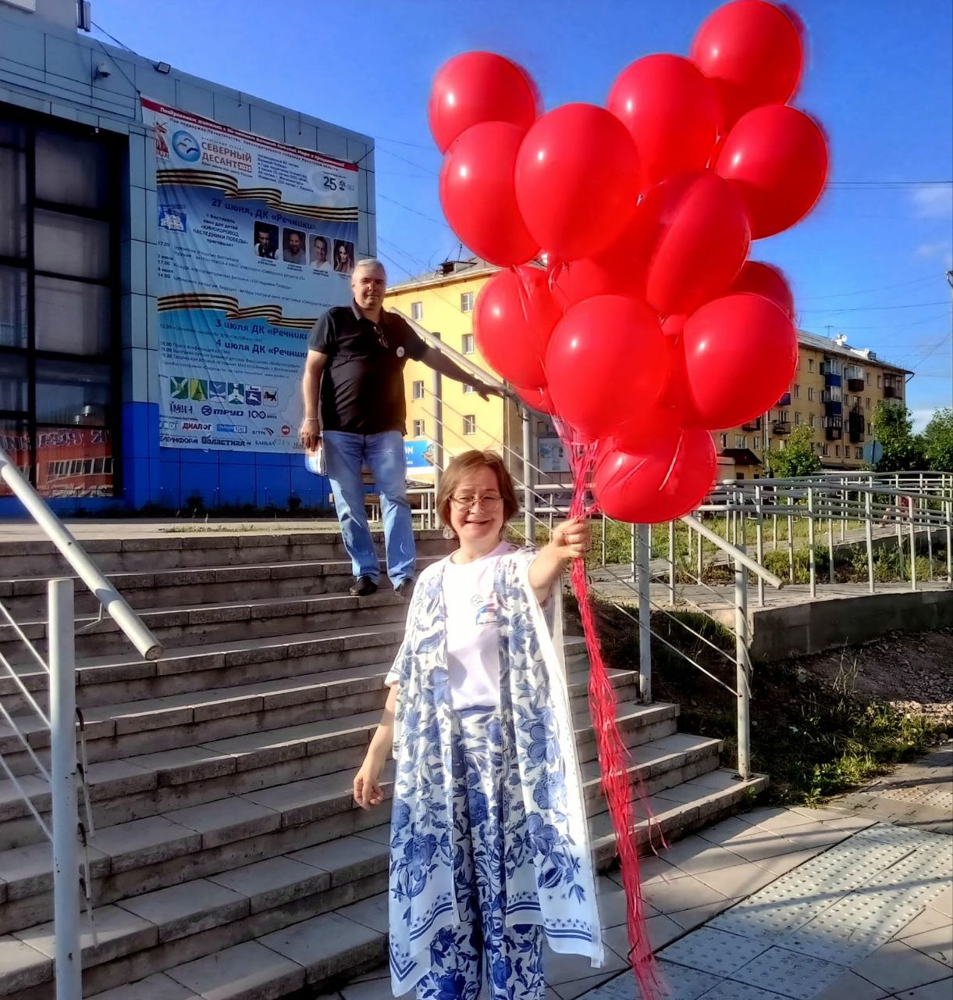
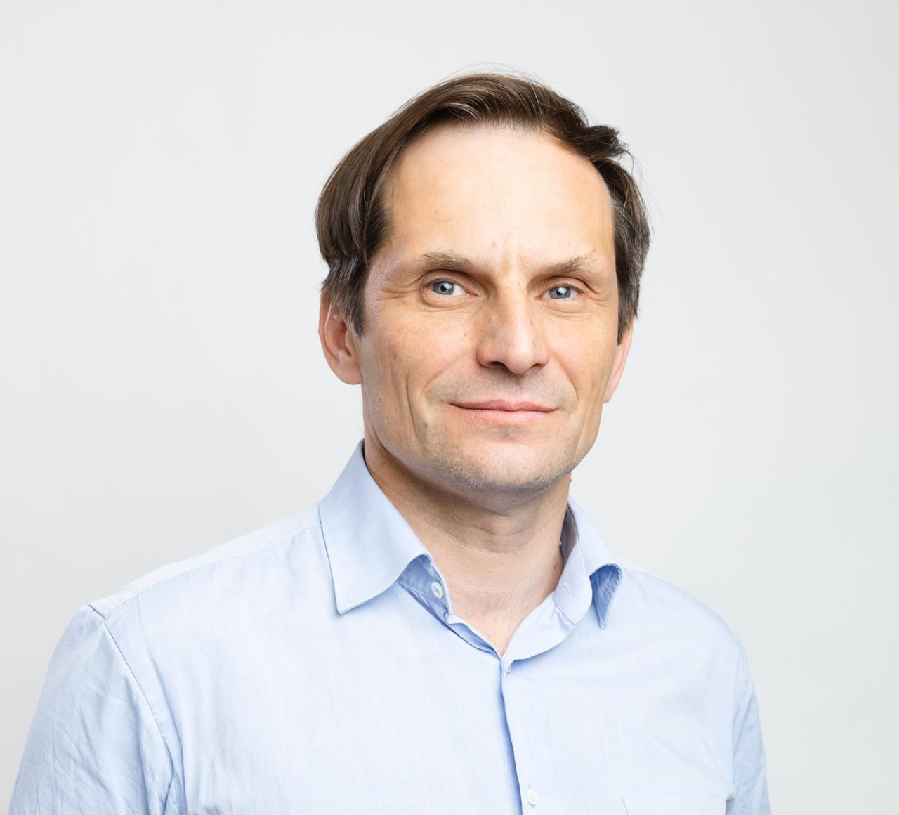
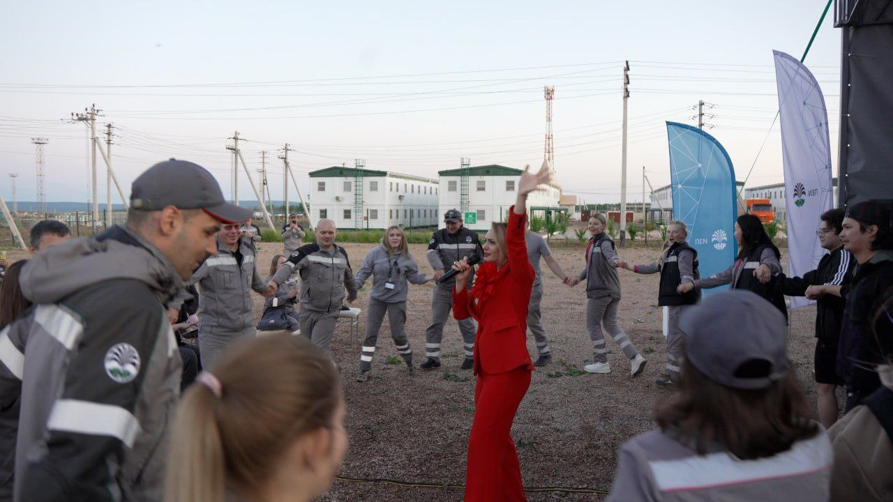
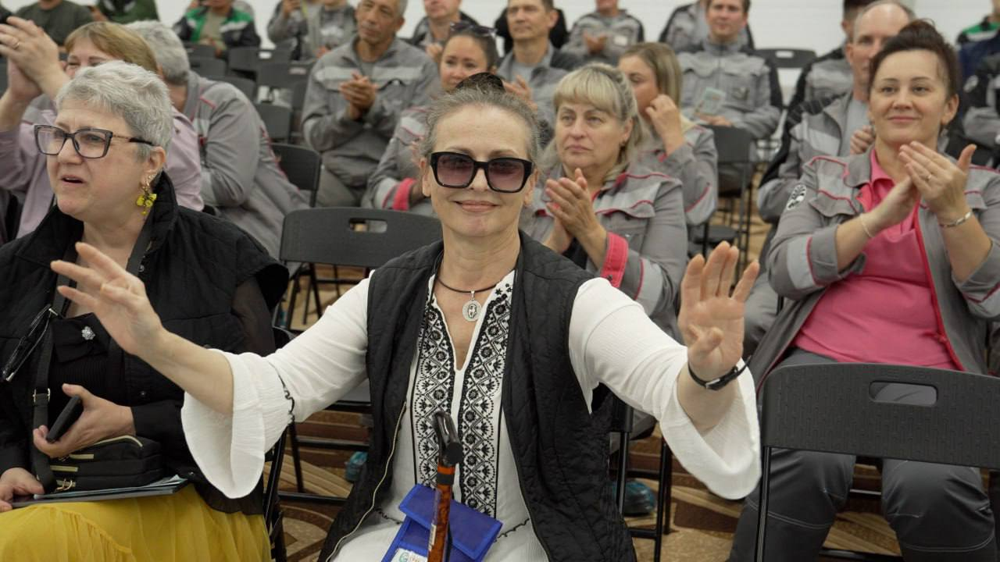
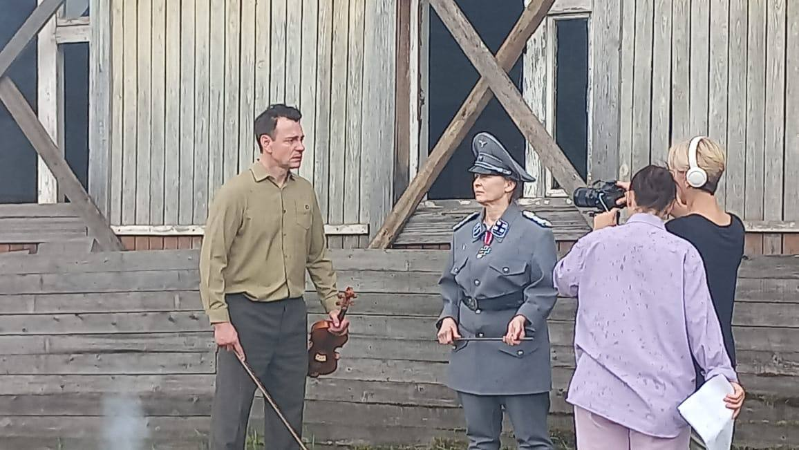
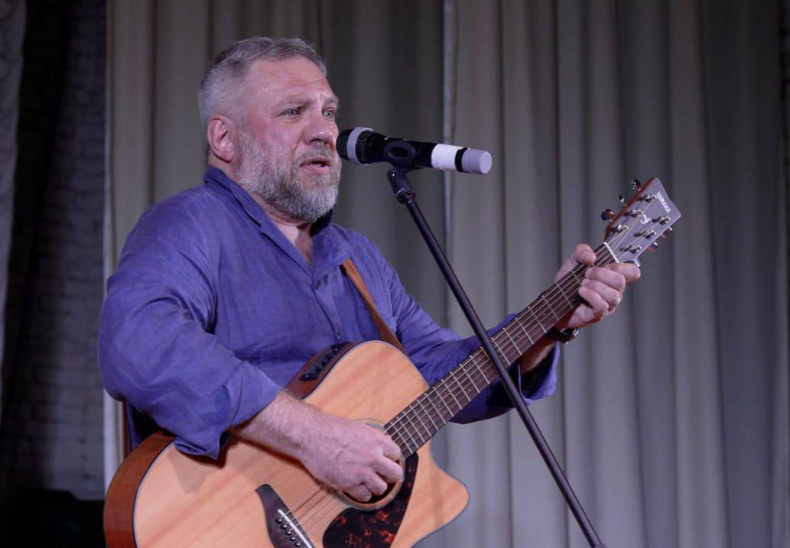
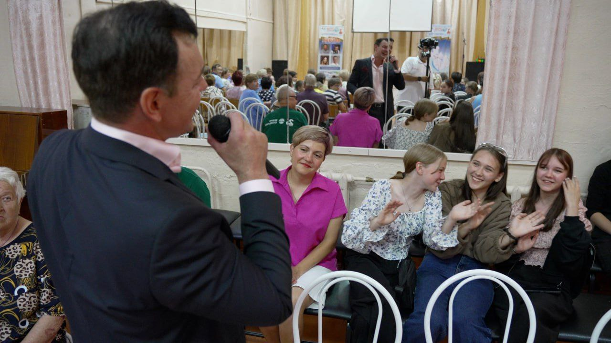
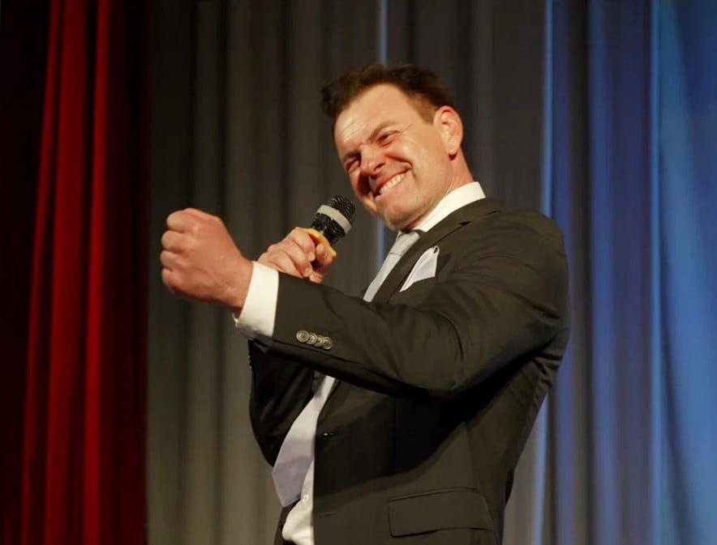
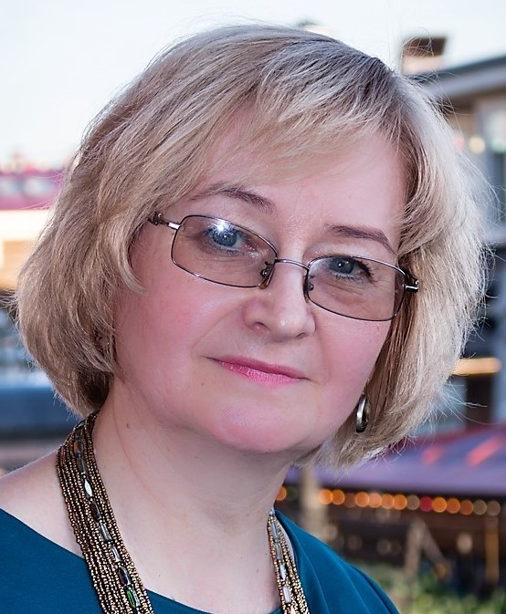

Актуальные новости в Телеграм-канале "КИНОХОРОВОД" и
в Телеграм-канале "2025 СЕВЕРНЫЙ ДЕСАНТ"
✨✨✨ДОСКА ПОЧЕТА "СЕВЕРНОГО ДЕСАНТА"
ТАТЬЯНА ЖИНДАЕВА
🔥 ОЧЕРК С ХАРАКТЕРОМ
«Северный десант»: проект от сердца
Ветром тайги и загадкой рек, пылью гравийных дорог и звенящей чистотой воздуха, звонким
смехом детей и слезами восторга взрослых, аплодисментами, от которых дрожат стены
поселковых клубов, написана история культурного подвига, имя которому – «Северный десант».
А началось всё… с одного сердца.
С одной души.
С одной женщины – Татьяны ЖИНДАЕВОЙ.
«Он – из моей души, из сердца», – говорит она о проекте. И сразу понятно: иначе бы не получилось.
А началось всё… с одного сердца.
С одной души.
С одной женщины – Татьяны ЖИНДАЕВОЙ.
«Он – из моей души, из сердца», – говорит она о проекте. И сразу понятно: иначе бы не получилось.
❄ Культурный ветер в лицо
Сложно поверить, что такой проект существует в Сибирской России. Без официоза,
без лишней мишуры, без штампов – зато с артистами в "ПАЗике", пыльными переездами,
ветром с реки Лены и теплом, которое разливается в глазах зрителей.
"Северный десант" – это не гастроли. Это культурная экспедиция, человеческая миссия, почти паломничество. С верой в искусство.
С 2014 года проект путешествует по тайге, по отдалённым уголкам Восточной Сибири и даже в Якутии иногда.
Артисты – звёзды театра и кино – бросают комфорт и приезжают туда, где сцена – это надувной подиум или деревянный клуб, кулисы – простая ткань, а зрительный зал – скамейки, занятые до отказа.
И как встречают!
С хлебом-солью, с жареными ленком и хариусом, с душой. А провожают – со слезами.
"Северный десант" – это не гастроли. Это культурная экспедиция, человеческая миссия, почти паломничество. С верой в искусство.
С 2014 года проект путешествует по тайге, по отдалённым уголкам Восточной Сибири и даже в Якутии иногда.
Артисты – звёзды театра и кино – бросают комфорт и приезжают туда, где сцена – это надувной подиум или деревянный клуб, кулисы – простая ткань, а зрительный зал – скамейки, занятые до отказа.
И как встречают!
С хлебом-солью, с жареными ленком и хариусом, с душой. А провожают – со слезами.
✨ Человек с характером
Татьяна Жиндаева – не просто вдохновитель. Она – движок.
Когда ей говорят "Невозможно", она улыбается.
Когда ей говорят "Слишком дорого", она ищет, где взять.
Когда ей говорят "Зачем?" – она просто делает.
Без денег, но с идеей. Без гарантий, но с верой.
Так начался «Северный десант».
Помог первым мэр, поддержали речник и банкир, поверил нефтяник, подключились журналисты, включились партнёры.
И за десять лет – тысячи километров, сотни выступлений, десятки городов и посёлков, миллионы эмоций.
Но за каждым успехом – спина, которую никто не видит. Это Татьяна в пути: она за рулём, с картой, с термосом.
Она – костюмер, организатор, душевный терапевт.
Где-то артист порвал костюм – она зашивает и гладит.
Где-то актриса простудилась – она лечит.
Нужны питание, гостиница, экскурсия - она договорится.
Ничто и никто не останется без её внимания.
Когда ей говорят "Невозможно", она улыбается.
Когда ей говорят "Слишком дорого", она ищет, где взять.
Когда ей говорят "Зачем?" – она просто делает.
Без денег, но с идеей. Без гарантий, но с верой.
Так начался «Северный десант».
Помог первым мэр, поддержали речник и банкир, поверил нефтяник, подключились журналисты, включились партнёры.
И за десять лет – тысячи километров, сотни выступлений, десятки городов и посёлков, миллионы эмоций.
Но за каждым успехом – спина, которую никто не видит. Это Татьяна в пути: она за рулём, с картой, с термосом.
Она – костюмер, организатор, душевный терапевт.
Где-то артист порвал костюм – она зашивает и гладит.
Где-то актриса простудилась – она лечит.
Нужны питание, гостиница, экскурсия - она договорится.
Ничто и никто не останется без её внимания.
🌟 Когда на краю – в центре
«Северный десант» – это больше, чем концерты и творческие встречи.
Это образовательные программы, мастер-классы, выставки, фотошкола, благотворительность, детский кинофестиваль "КиноХоровод", где юные творцы сами снимают фильмы и создают кинолетопись Сибири.
Это не просто праздник – это культурное дыхание для тех, кого часто забывают.
Для кого столичная премьера – это мечта.
Для кого автограф – как прикосновение к чуду.
Для кого каждый визит артистов – как письмо с Большой земли.
Это образовательные программы, мастер-классы, выставки, фотошкола, благотворительность, детский кинофестиваль "КиноХоровод", где юные творцы сами снимают фильмы и создают кинолетопись Сибири.
Это не просто праздник – это культурное дыхание для тех, кого часто забывают.
Для кого столичная премьера – это мечта.
Для кого автограф – как прикосновение к чуду.
Для кого каждый визит артистов – как письмо с Большой земли.
❤️ Из сердца – в люди
Секрет «Северного десанта» – в душевной честности. Проект не ради лайков. Не ради
титулов. Он из любви. Из желания согреть. Из духа сопричастности.
"Когда шеф в ладу со всеми, команда работает в охотку", – говорят десантники о Татьяне. Потому что она не управляет – она ведёт за собой, заражает смыслом и втягивает в общее дело. Признаётся: "Этот проект давно двигаю не одна. Помогают многие. И не только деньгами - просто своим теплом, сопричастностью. Друзья отправляют то посылки с баннерами и полиграфией, то флаги, забытые районами, то благодарности и дипломы... Или оформляют очередную сцену и готовят в подарок шарики, чтобы встреча десанта со зрителем прошла на высшем уровне. Или рассказывают на экскурсиях о нашем крае и Байкале так, что хочется обязательно ещё вернуться и не раз.
Потому что ветер в лицо с освежающими брызгами, когда идёшь по Священному озеру на теплоходе, и песня капитана под гитару об омулевой бочке, которую дружно исполняют все...
Этот проект объединяет людей, щедрых сердцем и богатых душой".
И пока есть такие люди, культура будет жить. И нести свет и добро в самых северных широтах.
"Когда шеф в ладу со всеми, команда работает в охотку", – говорят десантники о Татьяне. Потому что она не управляет – она ведёт за собой, заражает смыслом и втягивает в общее дело. Признаётся: "Этот проект давно двигаю не одна. Помогают многие. И не только деньгами - просто своим теплом, сопричастностью. Друзья отправляют то посылки с баннерами и полиграфией, то флаги, забытые районами, то благодарности и дипломы... Или оформляют очередную сцену и готовят в подарок шарики, чтобы встреча десанта со зрителем прошла на высшем уровне. Или рассказывают на экскурсиях о нашем крае и Байкале так, что хочется обязательно ещё вернуться и не раз.
Потому что ветер в лицо с освежающими брызгами, когда идёшь по Священному озеру на теплоходе, и песня капитана под гитару об омулевой бочке, которую дружно исполняют все...
Этот проект объединяет людей, щедрых сердцем и богатых душой".
И пока есть такие люди, культура будет жить. И нести свет и добро в самых северных широтах.

❗ТАТЬЯНА ЖИНДАЕВА
Журналист. Продюсер. Автор идеи и руководитель проекта "Северный десант". Президент
фестиваля кино для детей "КиноХоровод".
Ответственный человек. Тот самый мотор, который запускает позитив в мир людей.
Из сердца – в дорогу.
Из души – в зрителя.
Из любви – в культуру.
И всё это – "Северный десант".
Пока он жив – живёт настоящая Россия
Анна ХАРЛАМЕНКО
Ответственный человек. Тот самый мотор, который запускает позитив в мир людей.
Из сердца – в дорогу.
Из души – в зрителя.
Из любви – в культуру.
И всё это – "Северный десант".
Пока он жив – живёт настоящая Россия
Анна ХАРЛАМЕНКО
СЕРГЕЙ ЕВЧИК: "КОГДА ПРОЕКТ СТАНОВИТСЯ СУДЬБОЙ"
Каждый культурный проект живёт не только сценами и аплодисментами, но и людьми, которые
стоят за кулисами – организуют, поддерживают, верят в смысл происходящего.
«Северный десант» – не просто гастрольный тур по отдалённым уголкам Восточной Сибири. Это живой, многолетний диалог между артистами и зрителями, между большими городами и посёлками, между идеей и её воплощением.
Один из тех, кто прошёл с «Десантом» почти весь путь – СЕРГЕЙ ЕВЧИК, директор центра информационной политики и коммуникаций ООО «ИНК».
Для него проект – не просто рабочий процесс, а личная история, в которой есть всё: первый спектакль, вдохновляющие встречи и даже шторм, в буквальном смысле слова.
«Северный десант» – не просто гастрольный тур по отдалённым уголкам Восточной Сибири. Это живой, многолетний диалог между артистами и зрителями, между большими городами и посёлками, между идеей и её воплощением.
Один из тех, кто прошёл с «Десантом» почти весь путь – СЕРГЕЙ ЕВЧИК, директор центра информационной политики и коммуникаций ООО «ИНК».
Для него проект – не просто рабочий процесс, а личная история, в которой есть всё: первый спектакль, вдохновляющие встречи и даже шторм, в буквальном смысле слова.
СТАРТОВАЯ ИСКРА
Он хорошо помнит тот самый первый спектакль – «37 открыток», с которого всё началось.
Прошло одиннадцать лет, а воспоминания живы: московская команда, кинофестиваль
«В кругу семьи», автор и бессменный руководитель - Татьяна Жиндаева, - искра, с которой
стартовал «Северный десант».
В этой искре – не просто культура – энергия перемен. Проект – нечто большее, чем просто
культурная миссия. Это – живая ткань взаимодействия, эмоций и вдохновения.
КОГДА РАБОТА – НЕ ПРОСТО РАБОТА
Для Сергея Николаевича данный проект давно вышел за рамки обычной должностной
обязанности. Семь или восемь экспедиций он сопровождал лично – это тысячи километров
пути, десятки творческих встреч, сотни лиц. Это – бизнес-практика с человеческим лицом,
открытия и знакомства.
За «Северным десантом» – не только рабочие задачи, но и яркие впечатления: о реке Нижняя Тунгуска, северном поселке Ербогачён, путешествии до Киренска на теплоходе, другие моменты.
«Наверное, нельзя сделать хороший культурный проект, если видеть в нём только работу», – говорит он.
За «Северным десантом» – не только рабочие задачи, но и яркие впечатления: о реке Нижняя Тунгуска, северном поселке Ербогачён, путешествии до Киренска на теплоходе, другие моменты.
«Наверное, нельзя сделать хороший культурный проект, если видеть в нём только работу», – говорит он.
ИНК не просто партнёрство, ЭТО – СОПРИЧАСТНОСТЬ
Роль компании в «Северном десанте» – не только финансовая. ИНК – генеральный партнёр,
участник всего процесса. Системный и глубоко вовлеченный. Он вносит свой вклад
в создание комфортной среды для жизни и работы на территориях присутствия. И значимость
проектов в сфере культуры для местных жителей постоянно растет (это видно по итогам
соцопросов).
В организации поездок, перелетов, выступлений задействованы на разных этапах десятки сотрудников ИНК. Каждый вносит свой вклад. Вы не поверите, сколько раз концерты на открытой уличной сцене были под угрозой срыва: дожди, сильный ветер, нелетная погода, отключения света, неработающая аппаратура, но сотрудники компании оперативно приходили на помощь творческой группе. И начинали работать генераторы, вовремя прилетали вертолеты, если надо было – и сцену держали, как атланты – небо.
Дело в том, что долгие годы конструкция сцены-ракушки на Ярактинском месторождении была надувной. Как-то раз сильный ветер почти оторвал ее от основания, и мужики удерживали купол руками, пока шёл концерт.
В организации поездок, перелетов, выступлений задействованы на разных этапах десятки сотрудников ИНК. Каждый вносит свой вклад. Вы не поверите, сколько раз концерты на открытой уличной сцене были под угрозой срыва: дожди, сильный ветер, нелетная погода, отключения света, неработающая аппаратура, но сотрудники компании оперативно приходили на помощь творческой группе. И начинали работать генераторы, вовремя прилетали вертолеты, если надо было – и сцену держали, как атланты – небо.
Дело в том, что долгие годы конструкция сцены-ракушки на Ярактинском месторождении была надувной. Как-то раз сильный ветер почти оторвал ее от основания, и мужики удерживали купол руками, пока шёл концерт.
ПРО РОСТ – БЕЗ ПАФОСА
Как изменился проект?
Пусть об этом говорят жители посёлков и городов. Мы внутри процесса, нам сложно судить объективно, — признаётся он. Но убеждён, что для отдалённых районов это - всегда событие, культурное дыхание, которое ждут.
А эффект?
Он многогранен: культурный, образовательный, коммуникационный. «Подобные акции формируют спрос на культуру» – говорит Сергей Николаевич. И это, возможно, главный результат. Значимость таких проектов в глазах местных жителей подтверждают и соцопросы, и вовлечённость; всё меньше равнодушия на местах.
Пусть об этом говорят жители посёлков и городов. Мы внутри процесса, нам сложно судить объективно, — признаётся он. Но убеждён, что для отдалённых районов это - всегда событие, культурное дыхание, которое ждут.
А эффект?
Он многогранен: культурный, образовательный, коммуникационный. «Подобные акции формируют спрос на культуру» – говорит Сергей Николаевич. И это, возможно, главный результат. Значимость таких проектов в глазах местных жителей подтверждают и соцопросы, и вовлечённость; всё меньше равнодушия на местах.
О БУДУЩЕМ ПО-ЧЕСТНОМУ
Выход за пределы Восточной Сибири пока не планируется. Главное – не размах, а смысл.
Проекту важно развиваться не вширь, а вглубь: в смыслы, в формы, в свежие творческие
решения.
“Северный десант” – это путь. А путь – всегда движение, поиск и перемены.
“Северный десант” – это путь. А путь – всегда движение, поиск и перемены.
КОРОТКО, НО МЕТКО
На блиц-вопросы у Сергея Николаевича краткие и точные ответы.
О чём снимать кино детям?
– О себе. О школьниках 21 века: своих радостях и печалях, мечтах и планах.
Что вдохновляет?
– Идеи.
Куда поехать с хорошими людьми?
– Да куда угодно. Лишь бы действительно были хорошие люди рядом.
Пожелание «Северному десанту»?
– Слушать зрителя. Искать живое. Меняться и развиваться.
Благодарим Сергея Николаевича за интервью. С наилучшими пожеланиями от творческой команды
О чём снимать кино детям?
– О себе. О школьниках 21 века: своих радостях и печалях, мечтах и планах.
Что вдохновляет?
– Идеи.
Куда поехать с хорошими людьми?
– Да куда угодно. Лишь бы действительно были хорошие люди рядом.
Пожелание «Северному десанту»?
– Слушать зрителя. Искать живое. Меняться и развиваться.

Благодарим Сергея Николаевича за интервью. С наилучшими пожеланиями от творческой команды
⭐ ЗВЕЗДЫ ДЕСАНТА
🎶 БОЖЕСТВЕННАЯ ИСКРА ЛЮДМИЛЫ ТУКАН
Когда в зале наступает тишина и звучит её голос — что-то меняется в воздухе. Песня
становится не просто мелодией, а откровением.
Так воспринимают Людмилу ТУКАН зрители.
Она - обладательница голоса: нежного, как лепесток, чистого, как кристалл, трепетного, как капля росы.
Так воспринимают Людмилу ТУКАН зрители.
Она - обладательница голоса: нежного, как лепесток, чистого, как кристалл, трепетного, как капля росы.
🌻ЕЁ ИСТОРИЯ — РЕДКАЯ
Всё началось у старенькой печки бабушки Прасковьи, в маленьком гагаузском селе
Баурчи — среди запаха хлеба с брынзой, шерстяных клубков, тихих напевов и гагаузских
баллад, от которых плакала ее хрупкая душа. Божественная искра, зародившаяся тогда и
природный талант превратились в серьёзный профессиональный проект.
✨ РОЖДЕНИЕ АРТИСТКИ
Родные мечтали видеть её медсестрой, и Людмила покорно уехала в Тирасполь учиться.
Всё изменилось однажды на новогодних каникулах, когда увидела подруг на сцене
и поняла, что хочет петь.
Её услышал художественный руководитель ДК Иван Курдогло и сказал: «Раз душа поёт — так тому и быть!»
С тех пор поёт.
Её услышал художественный руководитель ДК Иван Курдогло и сказал: «Раз душа поёт — так тому и быть!»
С тех пор поёт.
🎵 СНАЧАЛА — НАРОДНЫЕ, ПОТОМ — СВОИ
Первый альбом — «Sana, mamu» — стал признанием в любви к матери и к родной земле.
Гагаузский, молдавский, русский — языки её чувств.
С фестивалей она увозит не только награды, но и веру: песни могут лечить.
Turkvizyon, "Восточный Базар", Grand PRIX, "Серебряный голос" — она там была и звучала там ее гагаузская душа.
Гагаузский, молдавский, русский — языки её чувств.
С фестивалей она увозит не только награды, но и веру: песни могут лечить.
Turkvizyon, "Восточный Базар", Grand PRIX, "Серебряный голос" — она там была и звучала там ее гагаузская душа.
🏡 ГАГАУЗИЯ — ЕЁ ОФИС
Людмила живёт в настоящее время в России. Но сердцем на родине. Часто приезжает домой,
участвует в культурных инициативах, пишет новые песни, выступает на родном языке.
Сейчас у неё:
🎧 9 музыкальных альбомов.
🎬 20 клипов.
Мотивация одна: "Песни — это воздух. А сцена — не работа, а зов души.
Сейчас у неё:
🎧 9 музыкальных альбомов.
🎬 20 клипов.
Мотивация одна: "Песни — это воздух. А сцена — не работа, а зов души.
🩺 МЕДСЕСТРА ПО ДИПЛОМУ, ЦЕЛИТЕЛЬ ПО СУТИ
Первая Заслуженная артистка Гагаузии говорит просто:
«Если отнять у меня голос — дышать будет нечем. В минуты тревоги и сомнений — закрываюсь и работаю. Музыка — моё лекарство».
Медсестра по диплому, лечит и своих зрителей песней.
«Если отнять у меня голос — дышать будет нечем. В минуты тревоги и сомнений — закрываюсь и работаю. Музыка — моё лекарство».
Медсестра по диплому, лечит и своих зрителей песней.
🌍 ФОЛК, ПОП, ИСКОННОЕ — В ОДНОМ ГОЛОСЕ
Её творчество — это сплав старинных народных песен, гагаузских баллад, современных авторских
композиций и поп-фолк мышление в единстве, которое не разрушает, а поддерживает
локальную мелодику.
Она вытащила на свет дар, который невозможно сконструировать.
Гагаузия вырастила славную дочь с божественной искрой в голосе.
Её увидела вся страна после выступления в эфире Андрея Малахова и восхитилась.
Ее услышала Сибирь - и влюбилась.
Она вытащила на свет дар, который невозможно сконструировать.
Гагаузия вырастила славную дочь с божественной искрой в голосе.
Её увидела вся страна после выступления в эфире Андрея Малахова и восхитилась.
Ее услышала Сибирь - и влюбилась.

❄️ СИБИРСКАЯ ИСТОРИЯ
Людмила Тукан стала международным гостем проекта «Северный десант» и фестиваля
"КиноХоровод" . Когда зазвучал её голос — зал долго аплодировал. У нее талант, мимо
которого пройти невозможно.Она несла свет своего народа и своей души.
Кроме того, Людмила снялась в пяти фильмах кинохоровдцев и стала их "Киномамой". Ее экранные дети с придыханием ходили за ней гуськом, поднимались на сцену, когда она выступала и охотно пели вместе "Я -- из Гагаузии, маленькой и гордой". Ее хит исполняли по всему гастрольному маршруту зрители и даже популярные московские звёзды.
Кроме того, Людмила снялась в пяти фильмах кинохоровдцев и стала их "Киномамой". Ее экранные дети с придыханием ходили за ней гуськом, поднимались на сцену, когда она выступала и охотно пели вместе "Я -- из Гагаузии, маленькой и гордой". Ее хит исполняли по всему гастрольному маршруту зрители и даже популярные московские звёзды.
💗 ОТ ДУШИ — К ДУШЕ
Именно так звучит Людмила Тукан.
Услышишь её голос — и он поселится в сердце. Навсегда. Как серебряный колокольчик.
Анна ХАРЛАМЕНКО
Услышишь её голос — и он поселится в сердце. Навсегда. Как серебряный колокольчик.
Анна ХАРЛАМЕНКО
СЕРГЕЙ АПРЕЛЬСКИЙ
СЕВЕРНОЕ ДЕТСТВО С ХАРАКТЕРОМ
Родился не в столице и не на берегу Лазурного залива. Его встретила Ухта — прямая, глубинная, северная Республика Коми, где даже снег с характером, а дети — с характером покруче.
Будучи мальчишкой Сергей не мечтал стать звездой, но и быть как все - не умел.
Придя в мир под апрельским небом, унаследовал весеннюю щедрость: дарить эмоции, не прося ничего взамен. И рано понял, что правда звучит громче слов, а боль становится искусством. Но путь к этой правде был далеко не прямой.
Придя в мир под апрельским небом, унаследовал весеннюю щедрость: дарить эмоции, не прося ничего взамен. И рано понял, что правда звучит громче слов, а боль становится искусством. Но путь к этой правде был далеко не прямой.
ПРАЗДНИК НЕПОСЛУШАНИЯ
Когда он вспоминает своё детство, то улыбается — дома был ласковым, почти послушным. Но стоило выйти
за порог — и начиналась оперетта улицы, праздник непослушания, в котором он становился "то королём,
то Дон Кихотом, то Соловьём разбойником" .
У него не было театральной семьи, но жила понимающая мама-друг и отец-кузнец, с кулаком размером с его голову. И был ветер — весенний, хулиганский, будто из Гайдая. Он и шепнул однажды : "А почему бы не попробовать..."
У него не было театральной семьи, но жила понимающая мама-друг и отец-кузнец, с кулаком размером с его голову. И был ветер — весенний, хулиганский, будто из Гайдая. Он и шепнул однажды : "А почему бы не попробовать..."
ПУТЬ К СЦЕНЕ — ЧЕРЕЗ ЦИРК
Сначала драмкружок. Потом — армия, завод, вечерняя школа… и мечта. Москва. Проваленные пробы. И — цирк.
Акробатика, чечётка, хождение по проволоке - театр "Кабаре", которому он отдал себя без остатка.
Цирк стал настоящим фундаментом. Там учили падать и вставать, смеяться, когда всё болит, входить в роль — даже если её нет. Там он познал всё: ритм, чувство, точность. Вошёл в профессию не через парадные двери, а через закулисную лестницу, цепляясь за перила, жонглируя между выборами и проволочками судьбы.
Цирк стал настоящим фундаментом. Там учили падать и вставать, смеяться, когда всё болит, входить в роль — даже если её нет. Там он познал всё: ритм, чувство, точность. Вошёл в профессию не через парадные двери, а через закулисную лестницу, цепляясь за перила, жонглируя между выборами и проволочками судьбы.
В ЖИЗНИ КАК В КАДРЕ
Стал актёром "без макияжа". В жизни — как в кадре. Все роли — изнутри. Из пережитого.
Из боли. Из правды.
В «Бригаде» играл «Муху». На съемках получил настоящий удар в лицо, с кровью и хрустом, но не ушёл. И все поняли, Апрельский не боится боли. Он боится фальши.
В «Бригаде» играл «Муху». На съемках получил настоящий удар в лицо, с кровью и хрустом, но не ушёл. И все поняли, Апрельский не боится боли. Он боится фальши.
ПРАВДА — НЕ ПОЗА, А СУТЬ
Он говорит о современном кино с горечью, волнением и надеждой. Называет имена,
предлагает темы, сам снимает, потому что правда для него не декорация, а кисть,
которой рисует свою жизнь, отношения, роли.
Он мог быть везде, как сегодня модно, мог мелькать, продаваться, но выбрал оставаться человеком, выбрал «шукшинскую реальность», «чухраевскую совесть», «бондарчуковский масштаб», "рязановский" юмор, "михалковскую" глубину.
Он мог быть везде, как сегодня модно, мог мелькать, продаваться, но выбрал оставаться человеком, выбрал «шукшинскую реальность», «чухраевскую совесть», «бондарчуковский масштаб», "рязановский" юмор, "михалковскую" глубину.
СЦЕНА — ПОЛЕ, КАМЕРА — СВИДЕТЕЛЬ
Для него сцена — не витрина, а поле, где он пашет. Камера — не объектив, а свидетель.
Зритель — не клиент, а соучастник.
После съёмок он порой грустит. Не от усталости — от того, что не просто проговорил текст, а прожил жизнь своего героя. И " расставание - маленькая смерть"...
Он помнит, как восьмиклассником спросил: «Как попасть в кино?» Учитель не знал. Сергей теперь сам знает. Ценой веры. Крови. Любви.
После съёмок он порой грустит. Не от усталости — от того, что не просто проговорил текст, а прожил жизнь своего героя. И " расставание - маленькая смерть"...
Он помнит, как восьмиклассником спросил: «Как попасть в кино?» Учитель не знал. Сергей теперь сам знает. Ценой веры. Крови. Любви.
ГОЛОС ДОМА ВНУТРИ
Внутренняя музыка Сергея — не скрипка. А голос дома. Картошка из трёх штук на ужин
без претензий. Совместные мечты. Доверие. Сын, для которого надевал костюм Деда Мороза,
пока тот не догадался. И огромная Вселенная надежды внутри.
БЫТЬ НАСТОЯЩИМ
Сергей Апрельский — не из тех, кто носит профессию как костюм. Он прожигает её до нитки.
Быть настоящим — даже если всё вокруг было бутафорией - для него смысл.
Он умеет быть разным: от лукавого балагура до тонкого лирика. От смешного до печального. От простого до великого. И главное - он всегда искренний. Именно эта искренность и делает его особенным. Он может рассмешить до слез и растрогать до дрожи. Одинаково органичен и в драме, и в комедии, в этюдах и импровизации. Его герои живые, дышащие, настоящие.
Он умеет быть разным: от лукавого балагура до тонкого лирика. От смешного до печального. От простого до великого. И главное - он всегда искренний. Именно эта искренность и делает его особенным. Он может рассмешить до слез и растрогать до дрожи. Одинаково органичен и в драме, и в комедии, в этюдах и импровизации. Его герои живые, дышащие, настоящие.


СИБИРЬ ПРИНЯЛА КАК СВОЕГО
"Северный десант" стал для Сергея не просто гастрольным маршрутом. Это была
территория, где он чувствовал себя на своём месте. Здесь его ждали. Здесь его слушали.
Здесь его полюбили — и дети, и взрослые. Он блистал не только на сцене и на съёмочной
площадке, в нём проявилось что-то от шамана — он переводил настроение в энергию, будил
сердца, вливал надежду.
Выступал на сцене, снимал кино, играл роли, раздавал часами автографы, общался с каждым, кто подходил, сочинял частушки, танцевал чечетку, читал стихи, пел песни, обнимал всех сердцем.
Его энергия стала откровением для публики. Он будто создан для северных маршрутов, таких же открытых, свободных, мощных и нежных одновременно.
Сибирь покорила сердце странника, он признавался ей в любви, говорил о перерождении.
"Жить как раньше, больше не смогу", - признается артист.
"Апрельский - свой парень!" - вторят сибиряки. Этого не сыграть. Он - настоящий!
И на сцене, и в жизни - как апрельский ветер. С озорством и нежностью!
Выступал на сцене, снимал кино, играл роли, раздавал часами автографы, общался с каждым, кто подходил, сочинял частушки, танцевал чечетку, читал стихи, пел песни, обнимал всех сердцем.
Его энергия стала откровением для публики. Он будто создан для северных маршрутов, таких же открытых, свободных, мощных и нежных одновременно.
Сибирь покорила сердце странника, он признавался ей в любви, говорил о перерождении.
"Жить как раньше, больше не смогу", - признается артист.
"Апрельский - свой парень!" - вторят сибиряки. Этого не сыграть. Он - настоящий!
И на сцене, и в жизни - как апрельский ветер. С озорством и нежностью!
ИРИНА ГОРКУНОВА - С ПОКЛОНОМ СИБИРИ
ОТ НАРОДНОГО ТАНЦА К ТЕАТРУ
Родилась на Украине, училась в Молдавии, живёт в России. Окончила Academia de Muzică,
Teatru și Arte Plastice в Кишинёве, получила не только диплом менеджера по культуре
и режиссёра, но и квалификацию руководителя танцевального коллектива.
Свой творческий путь начала с ансамбля народного танца «Ватра» в Тирасполе — и это многое объясняет в её пластике, интонациях, внутреннем ритме.
В начале 90-х переехала в Санкт-Петербург, служила в театрах «Премьера» и «Левендаль». Лауреат театральных премий. Её сценический диапазон — от классики до современной драмы, от сатиры до тонкой лирики. Среди театральных работ — «Доктор философии» Б. Нушича, «Провинциальные анекдоты» Вампилова, «Волки и овцы» Островского, «Валентин и Валентина» Рощина, «Благодать» Соломонова, «Золушка» Шварца и другие.
Свой творческий путь начала с ансамбля народного танца «Ватра» в Тирасполе — и это многое объясняет в её пластике, интонациях, внутреннем ритме.
В начале 90-х переехала в Санкт-Петербург, служила в театрах «Премьера» и «Левендаль». Лауреат театральных премий. Её сценический диапазон — от классики до современной драмы, от сатиры до тонкой лирики. Среди театральных работ — «Доктор философии» Б. Нушича, «Провинциальные анекдоты» Вампилова, «Волки и овцы» Островского, «Валентин и Валентина» Рощина, «Благодать» Соломонова, «Золушка» Шварца и другие.
НА ЭКРАНЕ ВСЕГДА ТОЧНА
Фильмография Ирины Горкуновой включает знаковые телевизионные проекты:
«Катя-2», «Улицы разбитых фонарей», «Чужой район», «Тайны следствия», «Дознаватель», «Невский», «Реализация», «Гений», «Авария», «Обмен», «Великолепная пятёрка».
На экране она всегда точна, глубока, убедительна — даже в эпизодах создаёт подлинность.
«Катя-2», «Улицы разбитых фонарей», «Чужой район», «Тайны следствия», «Дознаватель», «Невский», «Реализация», «Гений», «Авария», «Обмен», «Великолепная пятёрка».
На экране она всегда точна, глубока, убедительна — даже в эпизодах создаёт подлинность.
"СЕВЕРНЫЙ ДЕСАНТ" - ПРОЕКТ ОТКРЫТИЙ И СЕБЯ, И СИБИРИ
Она — не из тех, кто говорит о себе. Наоборот, самая закрытая из всей команды, но её
харизма прорывается через тишину. Там, где она — всегда настоящая работа, внутренняя
собранность и удивительное чувство меры.
В десанте это почувствовали все.
В 2025 году Ирина прошла обучение по программе подготовки кинопедагогов и стала программным директором проекта. Подобрала для сибирской аудитории шедевры советского и русского патриотического кинематографа.
Проводила кинопоказы с последующим обсуждением фильмов с глубоким содержанием, моральной чистотой, с тем светом, который остаётся после финальных титров.
Ирина Горкунова снималась в фестивальном "КиноХороводе". Увидев ее в одном фильме, юные кинотворцы буквально в очередь стали, чтобы пригласить потрясающую актрису в свой проект. В связи с этим, она сыграла сразу в нескольких коротких метрах, и каждый раз — с полной самоотдачей.
То ли простая бабушка, то ли директор школы, председатель совета или комендант тюрьмы - в каждой роли её вклад интересен.
Она и ребят на площадке обучала актерскому мастерству. Дети тянулись к наставнику, ждали возможности поговорить, послушать, просто побыть рядом.
Неожиданно Ирина стала активным действующим лицом и в концертной программе десанта. На сцене она пела. И как пела! Её «Молитва матери» растрогала до слёз. Лирика, романсы, народные интонации — всё звучало по-настоящему. Без надрыва, без позы — только искренность и тёплый голос. Такой лиризм и подлинность зритель сразу оценили шквалом аплодисментов.
Пытливость и интерес на экскурсиях, спокойный нрав и дружелюбие к детям, артистизм и мастерство, надёжное плечо в команде - вот такая многообразная личность появилась в команде.
В десанте это почувствовали все.
В 2025 году Ирина прошла обучение по программе подготовки кинопедагогов и стала программным директором проекта. Подобрала для сибирской аудитории шедевры советского и русского патриотического кинематографа.
Проводила кинопоказы с последующим обсуждением фильмов с глубоким содержанием, моральной чистотой, с тем светом, который остаётся после финальных титров.
Ирина Горкунова снималась в фестивальном "КиноХороводе". Увидев ее в одном фильме, юные кинотворцы буквально в очередь стали, чтобы пригласить потрясающую актрису в свой проект. В связи с этим, она сыграла сразу в нескольких коротких метрах, и каждый раз — с полной самоотдачей.
То ли простая бабушка, то ли директор школы, председатель совета или комендант тюрьмы - в каждой роли её вклад интересен.
Она и ребят на площадке обучала актерскому мастерству. Дети тянулись к наставнику, ждали возможности поговорить, послушать, просто побыть рядом.
Неожиданно Ирина стала активным действующим лицом и в концертной программе десанта. На сцене она пела. И как пела! Её «Молитва матери» растрогала до слёз. Лирика, романсы, народные интонации — всё звучало по-настоящему. Без надрыва, без позы — только искренность и тёплый голос. Такой лиризм и подлинность зритель сразу оценили шквалом аплодисментов.
Пытливость и интерес на экскурсиях, спокойный нрав и дружелюбие к детям, артистизм и мастерство, надёжное плечо в команде - вот такая многообразная личность появилась в команде.


ТИХАЯ СИЛА ИСКУССТВА
Ирина Горкунова — человек с внутренним достоинством, творец без суеты, педагог
без нравоучений. Она не стремится быть в центре, но именно на неё ориентируются.
С ней — спокойно, надёжно, интересно по-настоящему.
После встречи с ней остаётся чувство, будто рядом была актриса старой школы — глубокая, ироничная, живущая искусством, а не вокруг него. Таких мало. Поэтому интерес к ней подлинный.
Анна ХАРЛАМЕНКО
После встречи с ней остаётся чувство, будто рядом была актриса старой школы — глубокая, ироничная, живущая искусством, а не вокруг него. Таких мало. Поэтому интерес к ней подлинный.
Анна ХАРЛАМЕНКО
АЛЕКСЕЙ АНИКИН — С ОТКРОВЕНИЕМ О ПРОФЕССИИ, ОТ КОТОРОЙ НЕ УХОДЯТ
В детстве Алексей мечтал стать каскадёром — возможно, из-за песни группы «Земляне»,
которую крутил до тех пор, пока взрослые не выключали. А может, потому что энергия
в нём просто зашкаливала.
Недалеко от школы находилась киностудия имени Горького. Ассистенты режиссёров ходили по школам, набирали ребят на съёмки «Ералаша». Приглядывались на переменах — кто зажигает, кто держится особняком, кто хулиганит. Его всегда замечали. Но — по иронии судьбы — он ни разу так и не пошёл. То стеснялся, то времени не находилось. Сейчас говорит:
— Это была ошибка. Многое могло бы пойти иначе — и во ВГИК поступил бы раньше, и путь в кино был бы короче.
Он поступил только с третьей попытки, уже ближе к тридцати. До этого успел выучиться на инженера-геодезиста, потом на психолога. Музыка, сцена, стихи — всё это было рядом. Но в мир искусства он вошёл окончательно и бесповоротно после озарения:
— Рубикон был пройден. Я понял: мне ничего, кроме кино, не нужно.
С тех пор образы приходят как видения. Он не может объяснить, откуда именно, — и не стремится. Он в них живёт.
— Как говорил Евстигнеев: неведомо, откуда это берётся. Какой-то опыт, пережитый и переработанный внутри. А может — боль. А может — музыка. Иногда вскакиваешь среди ночи: пришла тема, кадр, слово…
Профессию актёра Алексей называет состоянием, почти диагнозом. Практически неизлечимым.
— Я знаю только двоих, кто ушёл из неё сам. Один — в недвижимость, другой — в такси. А остальные… если есть хоть капля таланта — не уходят. Меняют формы: становятся режиссёрами, продюсерами, кастинг-директорами. Но не уходят.
Он играет, пишет, снимает, копит, проживает. Иногда приходит пустота — сезонная. Но спасает сцена. Спасает вера. Спасает жизнь.
— И даже если ничего не происходит — всё равно есть надежда. Ощущение востребованности — уже спасение.
О публике говорит просто и тепло:
— Мой зритель — это мой народ. Хочу быть с ним на одной волне, в одной боли, в одной радости. Это главное.
Любимая роль — кинорежиссёр.
— Я его часто играл. Он мне близок. Знаю, что он думает, чем дышит, как работает.
Успех, по мнению Аникина, — в возможности выбирать, в уважении коллег и в том, что тебя цитируют.
— А если цитируют — значит, ты уже часть пространства.
А театр?
— Театр — это отдельная любовь. Это не про деньги. Это про существование. Про то, что нет дубля. Ты вышел — и сыграл. Это дисциплинирует. Хотел бы играть одну-две антрепризы талантливые.
А если коротко?
— Наша профессия — это образ жизни. Всё, что с ней связано, — не формулы. Это что-то глубинное, мистическое, внутреннее. Но без этого — уже невозможно.
В «Северном десанте» актёр и режиссёр Аникин помогал юным северянам снимать кино, а также выступал в гастрольном турне с мини-программой: гитара, песни из кинофильмов, «Сказ про Федота-стрельца, удалого молодца» Леонида Филатова.
Сибирь его впечатлила, а зрители запали в душу. Это было не просто культурное приключение длиной в 4000 км, а настоящее откровение.
Очерк сложился из ответов героя на вопросы журналиста. Благодарю.
Анна ХАРЛАМЕНКО
Недалеко от школы находилась киностудия имени Горького. Ассистенты режиссёров ходили по школам, набирали ребят на съёмки «Ералаша». Приглядывались на переменах — кто зажигает, кто держится особняком, кто хулиганит. Его всегда замечали. Но — по иронии судьбы — он ни разу так и не пошёл. То стеснялся, то времени не находилось. Сейчас говорит:
— Это была ошибка. Многое могло бы пойти иначе — и во ВГИК поступил бы раньше, и путь в кино был бы короче.
Он поступил только с третьей попытки, уже ближе к тридцати. До этого успел выучиться на инженера-геодезиста, потом на психолога. Музыка, сцена, стихи — всё это было рядом. Но в мир искусства он вошёл окончательно и бесповоротно после озарения:
— Рубикон был пройден. Я понял: мне ничего, кроме кино, не нужно.
С тех пор образы приходят как видения. Он не может объяснить, откуда именно, — и не стремится. Он в них живёт.
— Как говорил Евстигнеев: неведомо, откуда это берётся. Какой-то опыт, пережитый и переработанный внутри. А может — боль. А может — музыка. Иногда вскакиваешь среди ночи: пришла тема, кадр, слово…
Профессию актёра Алексей называет состоянием, почти диагнозом. Практически неизлечимым.
— Я знаю только двоих, кто ушёл из неё сам. Один — в недвижимость, другой — в такси. А остальные… если есть хоть капля таланта — не уходят. Меняют формы: становятся режиссёрами, продюсерами, кастинг-директорами. Но не уходят.
Он играет, пишет, снимает, копит, проживает. Иногда приходит пустота — сезонная. Но спасает сцена. Спасает вера. Спасает жизнь.
— И даже если ничего не происходит — всё равно есть надежда. Ощущение востребованности — уже спасение.
О публике говорит просто и тепло:
— Мой зритель — это мой народ. Хочу быть с ним на одной волне, в одной боли, в одной радости. Это главное.
Любимая роль — кинорежиссёр.
— Я его часто играл. Он мне близок. Знаю, что он думает, чем дышит, как работает.
Успех, по мнению Аникина, — в возможности выбирать, в уважении коллег и в том, что тебя цитируют.
— А если цитируют — значит, ты уже часть пространства.
А театр?
— Театр — это отдельная любовь. Это не про деньги. Это про существование. Про то, что нет дубля. Ты вышел — и сыграл. Это дисциплинирует. Хотел бы играть одну-две антрепризы талантливые.
А если коротко?
— Наша профессия — это образ жизни. Всё, что с ней связано, — не формулы. Это что-то глубинное, мистическое, внутреннее. Но без этого — уже невозможно.

В «Северном десанте» актёр и режиссёр Аникин помогал юным северянам снимать кино, а также выступал в гастрольном турне с мини-программой: гитара, песни из кинофильмов, «Сказ про Федота-стрельца, удалого молодца» Леонида Филатова.
Сибирь его впечатлила, а зрители запали в душу. Это было не просто культурное приключение длиной в 4000 км, а настоящее откровение.
Очерк сложился из ответов героя на вопросы журналиста. Благодарю.
Анна ХАРЛАМЕНКО
МИХАИЛ ХИМИЧЕВ: С ВЕРОЙ В ПРОФЕССИЮ, С ТЕПЛОМ К ЗРИТЕЛЮ
🎭 Он не любит говорить о себе. Не потому что не умеет – просто в этом нет позы.
Михаил Химичев — один из тех артистов, кто приходит в профессию не из-за славы,
а потому что иначе нельзя. Потому что сцена тянет, манит и... пугает. Потому что
зритель — это вызов. А каждый выход — проверка на прочность.
Когда-то его позвал голос дяди — Народного артиста Бориса Петровича Химичева. В нём звучала не просьба, а передача эстафеты: «Кто понесёт фамильный флаг?» И Михаил пошёл. Не зная, что впереди. Но с верой — в дело, в себя, в театр, в кино. И с огромным уважением к зрителям.
Он не называет сцену своей стихией, слишком громко это. Он, скорее, человек на перекрёстке волнения и желания, ответственности и честности. Быть в центре внимания — да, ему это близко. Но куда ближе — чувствовать зал, видеть, как зрители замирают, когда ты замер. Как слушают, когда ты живёшь на сцене.
Актерская профессия требует жертв. Только не тех, о которых любят слагать мифы. Химичев не жертвует собой как личностью — он жертвует комфортом, временем, а иногда и сном. Потому что профессия — это труд. Это режим. Это физическая форма — «ключ к актерскому долголетию», как говорил Марк Захаров. И выгорание, да, случается. Но он знает, что делать: сменить обстановку, выйти в лес, услышать тишину, отключиться от перегруженного «телевизора жизни». Там, в природе — его источник энергии.
Сомнения? Они — часть пути. Михаил не гонит их прочь, он им даёт место. И учится решать: «посомневался — и хватит». Решение принято — значит, так тому и быть.
Он не проживает свои роли в личной жизни, он не переносит персонажа домой. Для него важно: сцена — сцена, а жизнь — жизнь. Он утверждает, что не страдает теми «тяжёлыми формами», когда артист теряется в образе. Он умеет выходить — из грима, из костюма, из роли. Дом — это дом. И именно там он — настоящий.
У него нет пафосных рассказов о судьбоносных встречах. Всё проще и правдивей: совет дяди, поддержка семьи, любимые фильмы, музыка, детство с мультиками, Бонни М и Майклом Джексоном. Он — сын советской культуры, впитавший лучшее из прошлого, чтобы остаться человеком настоящего. И творцом.
А ещё у него есть зритель. И если в конце спектакля встаёт зал — значит, всё было не зря. В "Северном десанте" - это отчётливо проявилось. Сибирь восприняла артиста с теплом, овациями, благодарностью. Он достиг полного взаимопонимания с залом. Романтические песни, обаятельный настрой, улыбка и симпатия к людям - сделали его образ на сцене привлекательным.
Михаил Химичев выступал в Сибири с хорошим настроем, ярко, динамично. Сибиряки - народ чуткий - так же и отозвались. Они друг друга впечатлили.
И на " КиноХороводе" в фильмах детей - столичная звезда был профессиональным, взаимодействующим, и создал ряд вдумчивых персонажей в короткометражках кинохоровдцев.
Сибирская культурная экспедиция сложилась в его памяти , как эффективная, потрясающая, созидательная программа пылких сердец и успешная работа в тандеме "зритель-артист".
— А если бы Ваша жизнь стала сценарием?
Спросила я.
— Зачем? Жить — уже достаточно.
Ответил он.
Очерк подготовлен по ответам Михаила Химичева для Анны Харламенко. Спокойный, честный, человечный разговор с актёром, который не кричит о себе, но его слышно. Он покоряет сердца искренним отношением и творческим подходом.
Анна ХАРЛАМЕНКО
Когда-то его позвал голос дяди — Народного артиста Бориса Петровича Химичева. В нём звучала не просьба, а передача эстафеты: «Кто понесёт фамильный флаг?» И Михаил пошёл. Не зная, что впереди. Но с верой — в дело, в себя, в театр, в кино. И с огромным уважением к зрителям.
Он не называет сцену своей стихией, слишком громко это. Он, скорее, человек на перекрёстке волнения и желания, ответственности и честности. Быть в центре внимания — да, ему это близко. Но куда ближе — чувствовать зал, видеть, как зрители замирают, когда ты замер. Как слушают, когда ты живёшь на сцене.
Актерская профессия требует жертв. Только не тех, о которых любят слагать мифы. Химичев не жертвует собой как личностью — он жертвует комфортом, временем, а иногда и сном. Потому что профессия — это труд. Это режим. Это физическая форма — «ключ к актерскому долголетию», как говорил Марк Захаров. И выгорание, да, случается. Но он знает, что делать: сменить обстановку, выйти в лес, услышать тишину, отключиться от перегруженного «телевизора жизни». Там, в природе — его источник энергии.
Сомнения? Они — часть пути. Михаил не гонит их прочь, он им даёт место. И учится решать: «посомневался — и хватит». Решение принято — значит, так тому и быть.
Он не проживает свои роли в личной жизни, он не переносит персонажа домой. Для него важно: сцена — сцена, а жизнь — жизнь. Он утверждает, что не страдает теми «тяжёлыми формами», когда артист теряется в образе. Он умеет выходить — из грима, из костюма, из роли. Дом — это дом. И именно там он — настоящий.
У него нет пафосных рассказов о судьбоносных встречах. Всё проще и правдивей: совет дяди, поддержка семьи, любимые фильмы, музыка, детство с мультиками, Бонни М и Майклом Джексоном. Он — сын советской культуры, впитавший лучшее из прошлого, чтобы остаться человеком настоящего. И творцом.
А ещё у него есть зритель. И если в конце спектакля встаёт зал — значит, всё было не зря. В "Северном десанте" - это отчётливо проявилось. Сибирь восприняла артиста с теплом, овациями, благодарностью. Он достиг полного взаимопонимания с залом. Романтические песни, обаятельный настрой, улыбка и симпатия к людям - сделали его образ на сцене привлекательным.
Михаил Химичев выступал в Сибири с хорошим настроем, ярко, динамично. Сибиряки - народ чуткий - так же и отозвались. Они друг друга впечатлили.
И на " КиноХороводе" в фильмах детей - столичная звезда был профессиональным, взаимодействующим, и создал ряд вдумчивых персонажей в короткометражках кинохоровдцев.
Сибирская культурная экспедиция сложилась в его памяти , как эффективная, потрясающая, созидательная программа пылких сердец и успешная работа в тандеме "зритель-артист".


— А если бы Ваша жизнь стала сценарием?
Спросила я.
— Зачем? Жить — уже достаточно.
Ответил он.
Очерк подготовлен по ответам Михаила Химичева для Анны Харламенко. Спокойный, честный, человечный разговор с актёром, который не кричит о себе, но его слышно. Он покоряет сердца искренним отношением и творческим подходом.
Анна ХАРЛАМЕНКО
ПРОЕКТ «СЕВЕРНЫЙ ДЕСАНТ – 2025»
⭐ 11-й сезон: Культурный марафон длиной в 4000 километров.
С 25 июня по 15 июля Восточная Сибирь стала ареной яркого культурного события – здесь прошёл
одиннадцатый сезон творческого проекта «Северный десант».
За 20 дней команда артистов, наставников и организаторов преодолела 4000 километров, подарив вдохновение и живое искусство жителям 15 населённых пунктов.
Этот маршрут был не только географическим. Он стал дорогой к сердцам зрителей – от Иркутска до Качуга, от актовых залов до уличных площадок, от концертов до кинофестиваля. В каждом месте звучал главный посыл: искусство служит людям.
За 20 дней команда артистов, наставников и организаторов преодолела 4000 километров, подарив вдохновение и живое искусство жителям 15 населённых пунктов.
Этот маршрут был не только географическим. Он стал дорогой к сердцам зрителей – от Иркутска до Качуга, от актовых залов до уличных площадок, от концертов до кинофестиваля. В каждом месте звучал главный посыл: искусство служит людям.
ВЕХИ ПАМЯТИ – ЧЕРЕЗ ЯЗЫК ИСКУССТВА
Программа сезона была глубоко символична. Все события – в честь: 80-летия
Победы в Великой Отечественной войне; Года Защитника Отечества;
25-летия Иркутской нефтяной компании и юбилеев сибирских городов и поселков: 250 лет
Киренску, 60 – Железногорску-Илимскому, 380 – Макарово.
Каждое выступление во всех населенных пунктах этого года – неформальный диалог о прошлом, настоящем и будущем. Искусство стало языком памяти и признательности.
Каждое выступление во всех населенных пунктах этого года – неформальный диалог о прошлом, настоящем и будущем. Искусство стало языком памяти и признательности.
🗺️ КУЛЬТУРНАЯ ЭКСПЕДИЦИЯ
Маршрут прошёл через:
Иркутск, Усть-Кут, Янталь, ИЗП, Новую Игирму, Железногорск-Илимский, Коршуновский, Яракту, Верхнемарково, Нию, Звёздный, Киренск, Казачинское, Качуг и Ангу.
Впечатляет не только километраж, но и разнообразие площадок: поселковые клубы, городские Дома культуры, актовые залы школ, спорткомплексы вахтовых поселений на месторожденях, сцены под открытым небом. И везде – неизменная атмосфера живого контакта и мощной энергетики.
Иркутск, Усть-Кут, Янталь, ИЗП, Новую Игирму, Железногорск-Илимский, Коршуновский, Яракту, Верхнемарково, Нию, Звёздный, Киренск, Казачинское, Качуг и Ангу.
Впечатляет не только километраж, но и разнообразие площадок: поселковые клубы, городские Дома культуры, актовые залы школ, спорткомплексы вахтовых поселений на месторожденях, сцены под открытым небом. И везде – неизменная атмосфера живого контакта и мощной энергетики.
🎭 АРТИСТЫ – КАК ДЕСАНТ ВДОХНОВЕНИЯ
На сценах выступили талантливые актёры театра и кино:
Сергей Апрельский, Михаил Химичев, Алексей Аникин, Ирина Горкунова, а также международный гость – заслуженная артистка Гагаузии (Молдова) Людмила Тукан.
После творческих встреч/концертов – живое общение, автографы, фото на память. И те, кто вчера смотрел фильмы с их участием, сегодня делились с ними самыми сокровенными историями. А артисты отвечали добром и теплом души.
Сергей Апрельский, Михаил Химичев, Алексей Аникин, Ирина Горкунова, а также международный гость – заслуженная артистка Гагаузии (Молдова) Людмила Тукан.
После творческих встреч/концертов – живое общение, автографы, фото на память. И те, кто вчера смотрел фильмы с их участием, сегодня делились с ними самыми сокровенными историями. А артисты отвечали добром и теплом души.
🎬 «КИНОХОРОВОД»: КОГДА ДЕТИ СНИМАЮТ СИБИРЬ
Особой точкой притяжения стал Второй детский кинофестиваль «КиноХоровод. Наследники Победы»
в Усть-Куте.
На конкурс представили 14 короткометражных фильмов, снятых участниками 8 команд из 9 муниципалитетов Иркутской области.
Более 100 юных кинотворцов прошли обучение по авторской программе: сценарий, режиссура, актёрское мастерство, нейросети, цифровой монтаж – дети делали всё сами! Наставники были рядом и учили любить кино, профессионально к нему относиться. Все получилось!
Жюри отметило: уровень фильмов – выше, интереснее, качественнее, чем в прошлом году. Это радует.
Выбрать лучшую работу было непросто : фильмы кинохоровдцев были разными по жанрам, тематике, исполнению. И на звание – лучшая работа – претендовали все.
Гран-при после долгих обсуждений присудили команде Усть-Кута - за атмосферную картину «Ну, охотник!» (реж. М.Матафонов).
Проект курировали настоящие мастера:
Юлия Горбачевская, Александра Селезнёва, Анна Харламенко, Аркадий Стародубцев, Марат Абдурашитов, Ирина Горкунова, Игорь Губарев, президент фестиваля – Татьяна Жиндаева, директор форума – Наталья Носкова.
На фестивале работала детская редакция под руководством опытного наставника Веры Таюрской. Они побывали на всех съемочных площадках и вели репортажи с мест событий.
Церемонии открытия и закрытия детского фестиваля были красочными и вдохновили участников на новый киносезон. Тема Третьего кинофорума была озвучена на “Хороводе дружбы”: «Сибирь – любовь моя!»
На конкурс представили 14 короткометражных фильмов, снятых участниками 8 команд из 9 муниципалитетов Иркутской области.
Более 100 юных кинотворцов прошли обучение по авторской программе: сценарий, режиссура, актёрское мастерство, нейросети, цифровой монтаж – дети делали всё сами! Наставники были рядом и учили любить кино, профессионально к нему относиться. Все получилось!
Жюри отметило: уровень фильмов – выше, интереснее, качественнее, чем в прошлом году. Это радует.
Выбрать лучшую работу было непросто : фильмы кинохоровдцев были разными по жанрам, тематике, исполнению. И на звание – лучшая работа – претендовали все.
Гран-при после долгих обсуждений присудили команде Усть-Кута - за атмосферную картину «Ну, охотник!» (реж. М.Матафонов).
Проект курировали настоящие мастера:
Юлия Горбачевская, Александра Селезнёва, Анна Харламенко, Аркадий Стародубцев, Марат Абдурашитов, Ирина Горкунова, Игорь Губарев, президент фестиваля – Татьяна Жиндаева, директор форума – Наталья Носкова.
На фестивале работала детская редакция под руководством опытного наставника Веры Таюрской. Они побывали на всех съемочных площадках и вели репортажи с мест событий.
Церемонии открытия и закрытия детского фестиваля были красочными и вдохновили участников на новый киносезон. Тема Третьего кинофорума была озвучена на “Хороводе дружбы”: «Сибирь – любовь моя!»
📊 ЦИФРЫ, ЗА КОТОРЫМИ – ЛЮДИ
📍 15 населённых пунктов
🎭 100+ мероприятий
👥 Около 3000 зрителей
🎓 Мастер-классы по режиссуре, актёрскому и операторскому мастерству, цифровым технологиям и нейросетям, музыке в кино, журналистике, живописи, народно-прикладному искусству.
📸 Фотовыставка «Мобилография», осмысленные кинопоказы патриотических фильмов, встречи со СМИ, юными журналистами, экскурсии, пресс-конференции, благотворительные акции
🎭 100+ мероприятий
👥 Около 3000 зрителей
🎓 Мастер-классы по режиссуре, актёрскому и операторскому мастерству, цифровым технологиям и нейросетям, музыке в кино, журналистике, живописи, народно-прикладному искусству.
📸 Фотовыставка «Мобилография», осмысленные кинопоказы патриотических фильмов, встречи со СМИ, юными журналистами, экскурсии, пресс-конференции, благотворительные акции
🔁 ФИНАЛ? НЕТ. ЭТО – ПРОДОЛЖЕНИЕ. ОНО СЛЕДУЕТ…
Проект «Северный десант» завершил свой одиннадцатый сезон. Но он не уходит, он остаётся
в памяти, в фотографиях, в новых мечтах и укреплённой вере в силу искусства.
«Северный десант» и «КиноХоровод» обязательно вернутся с новыми идеями, вдохновляющими встречами и непоколебимым желанием дарить людям радость. Потому что они несут то, чего всегда не хватает – свет, смысл и живое прикосновение к настоящему искусству.
«Северный десант» и «КиноХоровод» обязательно вернутся с новыми идеями, вдохновляющими встречами и непоколебимым желанием дарить людям радость. Потому что они несут то, чего всегда не хватает – свет, смысл и живое прикосновение к настоящему искусству.
Фильмы фестиваля "КиноХоровод. Наследники Победы" 2025
Ванятка
Доброволец
Квадратинка хлеба
Ну, охотник!
Разбор полётов
Санитарка и танкист
Свет души
Сияние Жизни
Скрипач
Три Ивана
Фёклушка
Звёзды Янгеля
Тимур и его команда. Перезагрузка
СИБИРСКИЙ ДЕБЮТ: КАК «КИНОХОРОВОД» ПОКОРИЛ «ЗЕРКАЛО БУДУЩЕГО»
Из подмосковной кинематографической сказки вернулись домой, в суровую сибирскую глубинку,
наши юные кинотворцы. Всероссийский фестиваль «Зеркало будущего» завершился, в его
отполированной поверхности отразилось новое, яркое имя — «КиноХоровод». Первый выезд
северян за пределы Восточной Сибири, первый кинобатл на федеральном уровне — и сразу
громкая, безоговорочная победа.

О команде с берегов Прибайкалья заговорили на полном серьёзе и наставники, и участники,
отметив талант, дисциплину, трудолюбие, ответственность новичков и спаянность, когда
один - за всех, и все - за один кадр. Щедрый урожай наград собрали иркутяне
на подмосковной ниве. Эмоции от фестиваля остались самые светлые. Юрий Верхотуров
из Жигаловского района резюмирует: «Мне, в принципе, очень понравилось.
Люди были добрые и хорошие. Мастер-классы познавательные».
Когда на экране настоящие чувства - зрители плачут
В номинации «Игровое кино» из семи заявленных фестивальных сценариев жюри отобрало
два – «Талисман» и «Открытка из Африки».
В фильме «Талисман» наши ребята - Александр Балобанов, Александра Гладышева (Качугский район) и Федор Сафонов (Казаченско-Ленский район) - блеснули актерским мастерством, а в массовке снялась практически вся дружная команда «КиноХоровода». Александра Гладышева делится впечатлениями: «Всё интересно и круто. Больше всего мне понравились эти восемь часов, когда были всякие квесты, мафии. Это расслабляет после долгого ходового дня. Я познала себя в новом деле - режиссерском, и узнала много нового в актёрском мастерстве».
В фильме «Талисман» наши ребята - Александр Балобанов, Александра Гладышева (Качугский район) и Федор Сафонов (Казаченско-Ленский район) - блеснули актерским мастерством, а в массовке снялась практически вся дружная команда «КиноХоровода». Александра Гладышева делится впечатлениями: «Всё интересно и круто. Больше всего мне понравились эти восемь часов, когда были всякие квесты, мафии. Это расслабляет после долгого ходового дня. Я познала себя в новом деле - режиссерском, и узнала много нового в актёрском мастерстве».


Настоящей душевной бурей стал второй фильм — «Открытка из Африки». Его написали и сняли
сибирские киноделы. Автор сценария — Снежана Гладилина (Киренский район) — подарила
историю, которая тронула за живое.

Она вспоминает: «Это было незабываемо. Началось
очень, как сказать, тяжело, наверное, потому что были проблемы с заселением... Но
первый день, когда мы встретились с Романом Трофимовым, куратором-педагогом игрового
кино, изменил все: мы получили новые знакомства, новые знания... На следующий день
мы с третьей попытки придумали наш сценарий, написали и уже начали его воплощать
в жизнь. Два дня съемок, и вот мы получили, по ощущениям, очень хорошую картину».
Сюжет короткометражки «Открытка из Африки»: мать в одиночку воспитывает сына,
рассказывает, что папа в далекой Африке, и сама пишет ему письма. Но однажды в двери
раздается звонок...
Семейная драма вызвала всплеск эмоций. Фильм получает уже запросы на прокат. Игра юного артиста Ивана Балобанова (Качугский район) в этой картине была настолько пронзительной и убедительной, что зрители не сдерживали слез, а жюри за эту роль вручило ему диплом «Лучший актер».
Семейная драма вызвала всплеск эмоций. Фильм получает уже запросы на прокат. Игра юного артиста Ивана Балобанова (Качугский район) в этой картине была настолько пронзительной и убедительной, что зрители не сдерживали слез, а жюри за эту роль вручило ему диплом «Лучший актер».

Остальных персонажей сыграли Александр Зубрицкий (Киренский район),

Федор Сафонов (Казачинско-Ленский район),

Мария Гладилина (мама сценаристки, Киренский район).

Федор Сафонов (Казачинско-Ленский район),
Мария Гладилина (мама сценаристки, Киренский район).
Правда жизни в объективе: триумф документалистов
Если с игровым кино ребята практически на «ты» благодаря домашнему фестивалю «КиноХоровод»,
то документалистика стала для них открытием и преодолением. Анастасия Селиванова
из Качугского района рассказывает: «Здесь, на фестивале, я впервые села за компьютер
и научилась монтировать; взяла в руки камеру, училась снимать и разбираться
в настройках кадров, а самое главное - познала документальное кино. И поняла,
что документальное кино намного сложнее, чем игровое».

Сибиряков трудности только закаляют. Три диплома завоевали в этой номинации!
Анастасия Селиванова вместе с Захаром Подымахиным и Дмитрием Сафоновым
из Казачинско-Ленского района получили специальный диплом «Один в поле воин»
за документальное интервью «Формула жизни Елены Соколовой».

Алексей Поздняков (Киренский район) отмечен в номинации «Лучший монтаж». Звание «Лучший режиссер» разделили Варвара Арзамазова (Жигаловский район) и снова Алексей Поздняков — за пронзительный фильм-исповедь «Ты не один».

Алексей Поздняков (Киренский район) отмечен в номинации «Лучший монтаж». Звание «Лучший режиссер» разделили Варвара Арзамазова (Жигаловский район) и снова Алексей Поздняков — за пронзительный фильм-исповедь «Ты не один».
Ребята не просто снимали документалистику — они вглядывались в человеческие судьбы,
и камера в их руках становилась инструментом выражения чувств.
Мир анимации — вызов себе
Мультипликационное кино и данная номинация для юных сибиряков стала творческим
вызовом. С нуля, за несколько дней, создать целый мир! Они смогли.

Диплом «За уверенность в эксперименте» получил Юрий Верхотуров (Жигаловский район) за мультфильм «Табурет и друг Гав». Анимация его задела за живое.
 Он уже строит планы
на будущее: «Я установил приложение, в котором буду монтировать сам и что-то им смогу
снимать. Теперь знаю профессионалов в этой сфере и буду с ними сотрудничать».
Он уже строит планы
на будущее: «Я установил приложение, в котором буду монтировать сам и что-то им смогу
снимать. Теперь знаю профессионалов в этой сфере и буду с ними сотрудничать».
Даниил Потапов и Трофим Наумов (Казачинско-Ленский район) отмечены дипломом «За широкий творческий диапазон» за работу «Сбывшаяся мечта».

 Даниил делится своими ощущениями: «Мне очень понравилось мероприятие, особенно
обстановка тут, и ребята, которые сюда приехали. Очень весело. И кураторы здесь
классные. Больше всего мне запомнилась анимация, которой мы с Трофимом учились.
Трудности были в рисовке действий: такая протяженная, долгая и немножко муторная,
можно сказать, работа. А результат, конечно же, удивил и обрадовал».
Даниил делится своими ощущениями: «Мне очень понравилось мероприятие, особенно
обстановка тут, и ребята, которые сюда приехали. Очень весело. И кураторы здесь
классные. Больше всего мне запомнилась анимация, которой мы с Трофимом учились.
Трудности были в рисовке действий: такая протяженная, долгая и немножко муторная,
можно сказать, работа. А результат, конечно же, удивил и обрадовал».
Диплом «За уверенность в эксперименте» получил Юрий Верхотуров (Жигаловский район) за мультфильм «Табурет и друг Гав». Анимация его задела за живое.
Даниил Потапов и Трофим Наумов (Казачинско-Ленский район) отмечены дипломом «За широкий творческий диапазон» за работу «Сбывшаяся мечта».

Это была не просто победа над жанром, а победа над самими собой.
Эксперимент живого общения


В номинации «Видеорепортаж» специальный диплом «За смелость, твердость характера и
упорство в профессии» получили Никита Дроздов (Киренский район), Дарья Сафонова и
Милана Ларина (Казачинско-Ленский район) за репортаж «Шаг к друг другу: эксперимент
живого общения». Втроем, дружной командой они повторили давний эксперимент
журналистов, когда скрепка в результате длительного обмена превратилась в дом.
 Никита Дроздов утверждает: «Конечно, обменять скрепку на дом у нас не получилось, но,
я считаю, что наш эксперимент тоже удался. По его итогу мы получили книгу. А ведь
книга – это мудрость и знания многих людей, и еще один вид общения - из поколения
в поколение».
Никита Дроздов утверждает: «Конечно, обменять скрепку на дом у нас не получилось, но,
я считаю, что наш эксперимент тоже удался. По его итогу мы получили книгу. А ведь
книга – это мудрость и знания многих людей, и еще один вид общения - из поколения
в поколение».

Его коллеги по видеорепортажу – Дарья и Милана, отметили, что не только подробно
познакомились с новым для них жанром, но и применили на практике эти знания, получили
полезные навыки. Своей работой и фестивалем остались довольны.
Особое мнение: взгляд изнутри
Екатерина Балобанова, куратор Качугской команды и мама юных артистов,
говорит: «Фестиваль понравился. Дети работали в сборных командах из
разных регионов, обрели много новых друзей и бесценный опыт. А у нас, у сибирских
кураторов, впервые высвободилось время для мастер-классов и осмысленных кинопросмотров.
Мы плотно этим занялись».
Волнующим моментом на фестивале стал сюрприз, который навсегда запал в память детей.
Кинохороводцев навестили любимые артисты-«десантники» Людмила Тукан и Сергей Апрельский,
сыгравшие важные роли в их летних фильмах, посвященных 80-летию Победы.


Кинематографическая одиссея завершилась не просто поездкой на фестиваль,
а настоящим творческим прорывом. Иркутская группа приехала в парк-отель
«Покровское» неизвестной командой из сибирской глубинки, а уехала — героями, о которых
говорят теперь в разных уголках страны.


Татьяна Жиндаева, президент фестиваля «КиноХоровод», г. Иркутск:

- Представителей многих регионов заинтересовал наш северный фестиваль,
наш опыт прямого сотрудничества с муниципалитетами, уполномоченным по правам ребенка
Иркутской области, министерством соцразвития и, конечно,
бизнес-сообществом, они хотят приехать к нам. Огромная благодарность
всем главам районов, родителям за то, что дали возможность сводной
команде кинохороводовцев побывать на «Зеркале будущего». Мы точно
увидели в нем новые возможности и открыли свои перспективы. Спасибо
большое организаторам фестиваля во главе с президентом Николаем Данном
за такое большое и социально-значимое дело.
«Зеркало будущего» высветило яркую и талантливую картину будущего детского сибирского кино.
АННА ХАРЛАМЕНКО, АНГЕЛИНА БУБНОВА
Фото из личных архивов участников фестиваля.
P.S. Со 2 по 9 ноября в селе Покровское Одинцовского района Московской области проходил VIII Всероссийский кинофестиваль «ЗЕРКАЛО БУДУЩЕГО», собравший 28 команд со всей страны. Сводная команда иркутского фестиваля кино для детей «КИНОХОРОВОД», в которой были представители четырех северных районов: Киренского, Казачинско-Ленского, Жигаловского и Качугского, - стала его участником. Оргкомитет форума отобрал к показу шесть короткометражек сибиряков. На месте, в Подмосковье, юные кинематографисты Прибайкалья прошли обучение и подготовили конкурсные работы по четырем направлениям - игровое, документальное, анимационное кино и видеорепортаж. Восемь наград и дипломов привезли кинохороводовцы домой, став лучшими!
Фото из личных архивов участников фестиваля.
P.S. Со 2 по 9 ноября в селе Покровское Одинцовского района Московской области проходил VIII Всероссийский кинофестиваль «ЗЕРКАЛО БУДУЩЕГО», собравший 28 команд со всей страны. Сводная команда иркутского фестиваля кино для детей «КИНОХОРОВОД», в которой были представители четырех северных районов: Киренского, Казачинско-Ленского, Жигаловского и Качугского, - стала его участником. Оргкомитет форума отобрал к показу шесть короткометражек сибиряков. На месте, в Подмосковье, юные кинематографисты Прибайкалья прошли обучение и подготовили конкурсные работы по четырем направлениям - игровое, документальное, анимационное кино и видеорепортаж. Восемь наград и дипломов привезли кинохороводовцы домой, став лучшими!
КОРОТКОМЕТРАЖНЫЙ ФИЛЬМ «ДОБРОВОЛЕЦ» ЮНЫХ КИНЕМАТОГРАФИСТОВ КИРЕНСКОГО РАЙОНА ЗРИТЕЛИ КУЗБАССА ПРИЗНАЛИ ЛУЧШИМ
Доброго здравия всем кинохороводовцам! Об успехах нашей сводной команды на фестивале
"Зеркало будущего" знаете. Еще раз поздравляю всех его участников с этой серьёзной
заявкой о себе на федеральном уровне!!! Молодцы!!!
Но хорошие вести не сидят на месте. Спешу поздравить команду "Мы - Киренчане! (Киренский район) с победой на межрегиональном фестивале-конкурсе короткометражного кино и анимации " ПроПобеду", проводимого ГАУК "Кузбасскино"(Кемеровская область). Наш фильм " Доброволец" (сценарист Снежана Гладилина, в главной роли Егорки Громова - Александр Зубрицкий) стал лучшим в номинации "Короткометражный игровой фильм" по итогам зрительского голосования! Важная деталь - в кинозалах Кузбасса было показано более 30 детских работ из шорт-листа фестиваля. Напомню, туда вошли 4! наших киноновеллы:
«Свет души» (команда «Братчане», г. Братск),

«Три Ивана» (команда «КаЛеЙДОСКОП», Качугский район),

«Сияние жизни» (команда «Бамовята», Казачинско-Ленский район)

и «Доброволец» (команда «Мы – Киренчане!», Киренский район),

которые посмотрели 16 тысяч зрителей!!! Браво их создателям!!!
Всего в конкурсе "ПроПобеду" в трёх номинациях: документальный, игровой и анимационный фильмы - соревновались 59 работ. Общее количество заявок 2025 года - 91 шт. из 8 регионов страны.
Дорогие ребята и кураторы-наставники, чьи короткометражки увидели жители Кузбасса, от всей души поздравляю всех с таким большим успехом! Зрители – наши главные ценители. А команде «Добровольца» - Снежане Гладилиной, Саше Зубрицкому, Никите Дроздову, Даше Лыковой, Татьяне Плахиной, Оксане Верхотуровой, Роману Бойко, Михаилу Химичеву, Насте Кокориной, Александре Селезневой, Алексею Аникину, Анне Харламенко - особые поздравления! Вы - настоящие бойцы и молодцы!!! Так держать!!!
 Дорогие кинохороводовцы, взрослые и дети, горжусь нашими успехами на обоих фестивалях!!!
Огромная благодарность руководителям районов, партнерам «КиноХоровода» за веру в нас
и постоянную поддержку! Впереди у нас большое кинопутешествие, киноисследование
Сибири и признание ей в своей сыновней и дочерней любви.
Дорогие кинохороводовцы, взрослые и дети, горжусь нашими успехами на обоих фестивалях!!!
Огромная благодарность руководителям районов, партнерам «КиноХоровода» за веру в нас
и постоянную поддержку! Впереди у нас большое кинопутешествие, киноисследование
Сибири и признание ей в своей сыновней и дочерней любви.


Но хорошие вести не сидят на месте. Спешу поздравить команду "Мы - Киренчане! (Киренский район) с победой на межрегиональном фестивале-конкурсе короткометражного кино и анимации " ПроПобеду", проводимого ГАУК "Кузбасскино"(Кемеровская область). Наш фильм " Доброволец" (сценарист Снежана Гладилина, в главной роли Егорки Громова - Александр Зубрицкий) стал лучшим в номинации "Короткометражный игровой фильм" по итогам зрительского голосования! Важная деталь - в кинозалах Кузбасса было показано более 30 детских работ из шорт-листа фестиваля. Напомню, туда вошли 4! наших киноновеллы:
«Свет души» (команда «Братчане», г. Братск),
«Три Ивана» (команда «КаЛеЙДОСКОП», Качугский район),
«Сияние жизни» (команда «Бамовята», Казачинско-Ленский район)
и «Доброволец» (команда «Мы – Киренчане!», Киренский район),
которые посмотрели 16 тысяч зрителей!!! Браво их создателям!!!
Всего в конкурсе "ПроПобеду" в трёх номинациях: документальный, игровой и анимационный фильмы - соревновались 59 работ. Общее количество заявок 2025 года - 91 шт. из 8 регионов страны.
Дорогие ребята и кураторы-наставники, чьи короткометражки увидели жители Кузбасса, от всей души поздравляю всех с таким большим успехом! Зрители – наши главные ценители. А команде «Добровольца» - Снежане Гладилиной, Саше Зубрицкому, Никите Дроздову, Даше Лыковой, Татьяне Плахиной, Оксане Верхотуровой, Роману Бойко, Михаилу Химичеву, Насте Кокориной, Александре Селезневой, Алексею Аникину, Анне Харламенко - особые поздравления! Вы - настоящие бойцы и молодцы!!! Так держать!!!